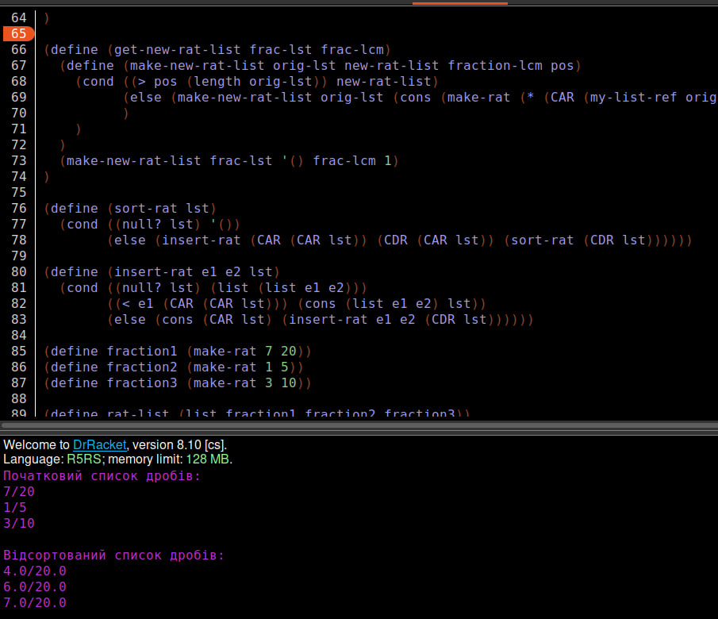
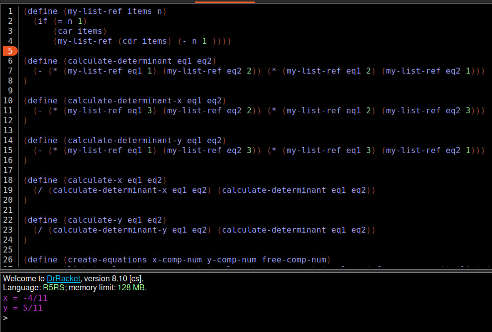

Лабораторна робота 5
Мета роботи
Опанувати технологію абстракції даних в мовах функціонального програмування. Реалізувати програму обробки раціональних та комплексних чисел мовами функціонального програмування, представивши ці числа конструкціями типу «пара»
Вибір мови програмування та IDE
Для виконання даної лабораторної роботи було використано мову функціонального програмування Scheme та IDE DrRacket. Мова Scheme надає великий набір числових типів і операцій з ними, має неявні типи даних та статичну область видимості. DrRacket дозволяє програмувати на великій кількості мов функціонального програмування та має зручний інтерфейс.
Завдання 1
Умова завдання
Створити список, елементами якого є раціональні числа у вигляді дробив. Упорядкувати список за зростанням (спаданням). Для розв’язання задачі привести усі дроби до спільного знаменника і порівнювати чисельники. Надрукувати список після приведення елементів до спільного знаменника. Наприклад, задані 7/20, 1/5, 3/10 ⇒7/20, 4/20, 6/20 ⇒ 4/20, 6/20, 7/20.
Код програми:
(define (my-list-ref items n)
(if (= n 1)
(car items)
(my-list-ref (cdr items) (- n 1))
)
)
(define (numer x) (car x))
(define (denom x) (cdr x))
(define (make-rat n d) (cons n d))
(define(print-lst x)
(newline)
(display (my-list-ref x 1))
(display "/")
(display (my-list-ref x 2)))
(define (print_sort_list fractions)
(cond ((null? fractions)
(newline))
(else
(print-lst (CAR fractions))
(display " ")
(print_sort_list (CDR fractions))
)
))
(define(print-rat x)
(newline)
(display (numer x))
(display "/")
(display (denom x)))
(define (print_list fractions)
(cond ((null? fractions)
(newline))
(else
(print-rat (CAR fractions))
(display " ")
(print_list (CDR fractions))
)
))
(define (my-gcd a b)
(if (= a 0)
b
(my-gcd (remainder b a) a)))
(define (lcm-of-list arr idx)
(if (= idx (- (length arr) 1))
(list-ref arr idx)
(let ((a (list-ref arr idx))
(b (lcm-of-list arr (+ idx 1))))
(exact->inexact (* a (/ b (gcd a b)))))))
(define (get-denoms frac-lst)
(define (make-denoms-list orig-lst list-for-denoms pos)
(cond ((> pos (length orig-lst)) list-for-denoms)
(else (make-denoms-list orig-lst (cons (CDR (my-list-ref orig-lst pos)) list-for-denoms) (+ pos 1))
)
)
)
(make-denoms-list frac-lst '() 1)
)
(define (get-new-rat-list frac-lst frac-lcm)
(define (make-new-rat-list orig-lst new-rat-list fraction-lcm pos)
(cond ((> pos (length orig-lst)) new-rat-list)
(else (make-new-rat-list orig-lst (cons (make-rat (* (CAR (my-list-ref orig-lst pos)) (/ frac-lcm (CDR (my-list-ref orig-lst pos)))) frac-lcm) new-rat-list) fraction-lcm (+ pos 1))
)
)
)
(make-new-rat-list frac-lst '() frac-lcm 1)
)
(define (sort-rat lst)
(cond ((null? lst) '())
(else (insert-rat (CAR (CAR lst)) (CDR (CAR lst)) (sort-rat (CDR lst))))))
(define (insert-rat e1 e2 lst)
(cond ((null? lst) (list (list e1 e2)))
((< e1 (CAR (CAR lst))) (cons (list e1 e2) lst))
(else (cons (CAR lst) (insert-rat e1 e2 (CDR lst))))))
(define fraction1 (make-rat 7 20))
(define fraction2 (make-rat 1 5))
(define fraction3 (make-rat 3 10))
(define fraction4 (make-rat 1 4))
(define rat-list (list fraction1 fraction2 fraction3 fraction4))
(define fractions-denom (get-denoms rat-list))
(define fractions-lcm (lcm-of-list fractions-denom 0))
(define rat-list-with-lcm (get-new-rat-list rat-list fractions-lcm))
(define sorted-rat-list (sort-rat rat-list-with-lcm))
(display "Початковий список дробів: ")
(print_list rat-list)
(newline)
(display "Відсортований список дробів: ")
(print_sort_list sorted-rat-list)
(newline)
Результат роботи програми
Достовірність результату:
Завдання 2
Умова завдання
Створити список з трьох комплексних чисел, які задані в алгебраїчній формі a + ib. Розв’язати комплексне рівняння, коефіцієнтами якого при x та y та вільний член є комплексні числа зі списку. Контрольний приклад: (1 + 2i)x+(3 − 5i)y = 1 − 3i. Відповідь x = −4/5; y = 11/11
Код програми:
(define (my-list-ref items n)
(if (= n 1)
(car items)
(my-list-ref (cdr items) (- n 1 ))))
(define (calculate-determinant eq1 eq2)
(- (* (my-list-ref eq1 1) (my-list-ref eq2 2)) (* (my-list-ref eq1 2) (my-list-ref eq2 1)))
)
(define (calculate-determinant-x eq1 eq2)
(- (* (my-list-ref eq1 3) (my-list-ref eq2 2)) (* (my-list-ref eq1 2) (my-list-ref eq2 3)))
)
(define (calculate-determinant-y eq1 eq2)
(- (* (my-list-ref eq1 1) (my-list-ref eq2 3)) (* (my-list-ref eq1 3) (my-list-ref eq2 1)))
)
(define (calculate-x eq1 eq2)
(/ (calculate-determinant-x eq1 eq2) (calculate-determinant eq1 eq2))
)
(define (calculate-y eq1 eq2)
(/ (calculate-determinant-y eq1 eq2) (calculate-determinant eq1 eq2))
)
(define (create-equations x-comp-num y-comp-num free-comp-num)
(cons (list (real-part x-comp-num) (real-part y-comp-num) (real-part free-comp-num)) (list (imag-part x-comp-num) (imag-part y-comp-num) (imag-part free-comp-num)))
)
(define x-complex 1+2i)
(define y-complex 3-5i)
(define free-complex 1-3i)
(define system-of-equations (create-equations x-complex y-complex free-complex))
(define x (calculate-x (CAR system-of-equations) (CDR system-of-equations)))
(define y (calculate-y (CAR system-of-equations) (CDR system-of-equations)))
(display "x = ")
(display x)
(newline)
(display "y = ")
(display y)
(newline)
Результат роботи програми
Достовірність результату:
Висновок
В ході виконання даної лабораторної роботи було створено список дробів та упорядковано його за зростанням, також було створено список з трьох комплексних чисел та розв'язано комплексне рівняння з ними. В результаті всі написані функції виконувалися без помилок та видавали правильний результат.